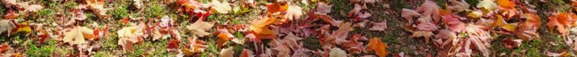

thuleanotherworld.com
[xmpp] [irc] [email] [pgp]
Changelog
- 10/08/25 - Completely re-did site
- 07/12/25 - Removed all javascript
- 06/23/25 - I2P and Tor Mirrors
- 02/21/25 - Added pages.
- 01/30/25 - Homepage Makeover
- 05/21/24 - Completely re-coded the homepage.
- 04/09/24 - Created the site.
![[A Picture of GNUtan]](images/gnutan.png)
About
Welcome to my website. I am a student from the United States. I usually go by beziel or thuleanotherworld online. This is my personal site for documenting some of the cool things I have found on the internet as well as things I am interested in. It's also an attempt to abandon traditional social media in exchange for a more personal and free web.
Stuff I Like
- GNU/Linux and free/libre software (My favorite distros are arch and artix)
- Geopolitics
- Geneology
- Linguistics/Languages (I speak English, Spanish, and some German)
- Programming (in C)
- Music (Extreme Metal, DNB, House)
- Internet Culture and 2000s nostalgia
- Videogames (sometimes)
{kind=link}
Extra Information
This site was started in 2024 on neocities, as "alchemillaotherworld". It contains no javascript and looks best on a computer, but it should be viewable on a phone too. If you want to talk about the personal web or technology, message me on XMPP or IRC. If by some off chance you do not know how to make a wesbite, it's easy, you can make a free one on neocities.
The "older" looking style of the site is intentional.